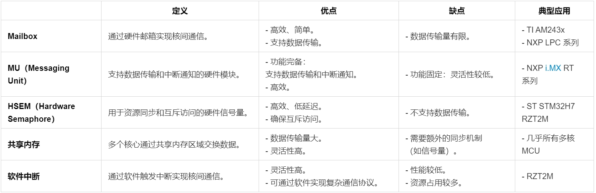
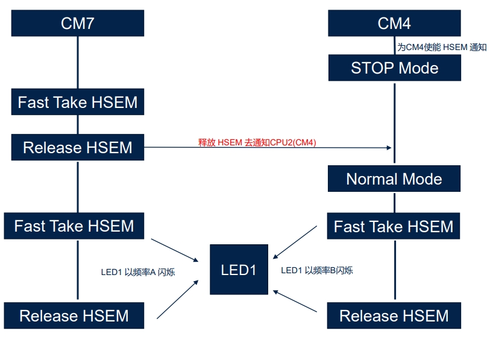

嵌入式科普(30)一文看懂嵌入式MCU/MPU多核架构与通信
一、概要
- 快速了解嵌入式MCU/MPU的多核架构、通信与调试。
- 重点介绍同构Cortex-M/R多核
二、相关资料
- https://blog.csdn.net/weixin_42135087/article/details/123191551
- https://www.nxp.com.cn/company/about-nxp/smarter-world-videos/CORTEX-M4-DUAL-CORE-IMPLEMENTAT
- https://blog.csdn.net/weixin_41493155/article/details/142206668
- https://docs.espressif.com/projects/esp-idf/zh_CN/stable/esp32/api-reference/system/freertos_idf.html#id3
- FreeRTOS 的对称多处理 (SMP)
- 多核异构核间通信–ipcc
- AM263P Technical Reference Manual
- i.MX RT1170 Dual Core Application
- LAT1396_STM32CubeIDE实用技巧之STM32H7双核调试的配置_V1.0
- LPC55xx LPC55Sxx 的双核通信
- RT600 双核通信与调试
- STM32H7 Product Training of Techincal_20210119
- STM32H7x5x7 dual core microcontroller debugging
三、多核架构
| 架构类型 | 同构多核 | 异构多核 | 锁步核（Lockstep） |
|---|---|---|---|
| 定义 | 多个核心完全相同（多Cortex-A 或 多Cortex-M7/M4）。 | 多个核心不同（如 Cortex-M7 + Cortex-M4 或 Cortex-A + Cortex-M）。 | 两个核心执行相同的指令，通过比较结果确保功能安全。 |
| 优点 | - 负载均衡：任务可以均匀分配到多个核心。Linux系统负责；根据内核定义功能。 | - 分工明确：高性能核心处理复杂任务，低功耗核心处理实时任务。 - 能效优化。 |
- 高可靠性：适用于功能安全（Functional Safety）应用。 |
| 缺点 | - 资源浪费：均匀分配问题；主核心和副核心。 | - 开发复杂：需要针对不同核心编写和调试代码。 | - 资源占用：需要额外的硬件和软件支持。 |
| 典型应用 | - 高性能（多Cortex-A）。 | - 高性能 + 实时控制（如 STM32H7 的 Cortex-M7 + Cortex-M4）。 - 应用处理器 + 实时控制。 |
- 汽车电子（如 TI AM263x 的 Cortex-R5F 锁步核）。 - 工业安全系统。 |
- 同构多核
定义：多个相同核心（多Cortex-A 或 多Cortex-M7/M4）。
优点：负载均衡、开发简单。
缺点：资源浪费。
应用：高性能计算。
- 异构多核
定义：多个不同核心（如 Cortex-A + Cortex-M）。
优点：分工明确、能效优化。
缺点：开发复杂。
应用：高性能 + 实时控制。
- 3.3 锁步核
定义：两个核心执行相同指令，确保功能安全。
优点：高可靠性。
缺点：资源占用。
应用：汽车电子、工业安全。
四、多核通信机制

| 定义 | 优点 | 缺点 | 典型应用 | |
|---|---|---|---|---|
| Mailbox | 通过硬件邮箱实现核间通信。 | - 高效、简单。 - 支持数据传输。 |
- 数据传输量有限。 | - TI AM243x - NXP LPC 系列 |
| MU（Messaging Unit） | 支持数据传输和中断通知的硬件模块。 | - 功能完备：支持数据传输和中断通知。 - 高效。 |
- 功能固定：灵活性较低。 | - NXP i.MX RT 系列 |
| HSEM（Hardware Semaphore） | 用于资源同步和互斥访问的硬件信号量。 | - 高效、低延迟。 - 确保互斥访问。 |
- 不支持数据传输。 | - ST STM32H7 RZT2M |
| 共享内存 | 多个核心通过共享内存区域交换数据。 | - 数据传输量大。 - 灵活性高。 |
- 需要额外的同步机制（如信号量）。 | - 几乎所有多核 MCU |
| 软件中断 | 通过软件触发中断实现核间通信。 | - 灵活性高。 - 可通过软件实现复杂通信协议。 |
- 性能较低。 - 资源占用较多。 |
- RZT2M |
五、典型举例
| MCU | 架构 | 通信机制 | 特点 |
|---|---|---|---|
| NXP i.MX RT1170 | Cortex-M7 + Cortex-M4 | MU + SEMA4 | - 高性能 + 实时控制。 - 支持数据传输和同步。 |
| ST STM32H7 瑞萨 RZT2M | Cortex-M7 + Cortex-M4 | HSEM | - 高性能 + 实时控制。 - 支持资源同步和互斥访问。 |
| TI AM243x | Cortex-R5F | Mailbox + IPCC | - 实时控制 + 工业通信。 - 支持大数据传输。 |
| 瑞萨 RZT2M | Cortex-R52 | 软件中断 | - 高灵活性。 - 适合安全性要求高的场景。 |





六、总结
- 同构Cortex-A多核由Linux复制内核通信，IPC进程通信，高性能
- 同构Cortex-M/R多核有多种通信机制，如FreeRTOS SMP、MU、IPC、信号量、Mailbox、共享内存、CPU中断等
- 异构多核通常用AMP等机制